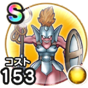

ヘルパイレーツ
ほこら戦闘開始時にたまに自身に水系へのダメージアップ効果を付与するこころ最大コスト+4スキルの斬撃・体技ダメージ+7%水系へのダメージ+10%エレメント系へのダメージ+5%ザバ属性耐性+5% / 8.5点
くわしい特徴
【ランク特殊効果】 戦闘開始時にたまに自身に水系へのダメージアップ効果を付与するこころ最大コスト+4スキルの斬撃・体技ダメージ+7%水系へのダメージ+10%エレメント系へのダメージ+5%ザバ属性耐性+5%

ほこら戦闘開始時にたまに自身に水系へのダメージアップ効果を付与するこころ最大コスト+4スキルの斬撃・体技ダメージ+7%水系へのダメージ+10%エレメント系へのダメージ+5%ザバ属性耐性+5% / 8.5点
【ランク特殊効果】 戦闘開始時にたまに自身に水系へのダメージアップ効果を付与するこころ最大コスト+4スキルの斬撃・体技ダメージ+7%水系へのダメージ+10%エレメント系へのダメージ+5%ザバ属性耐性+5%